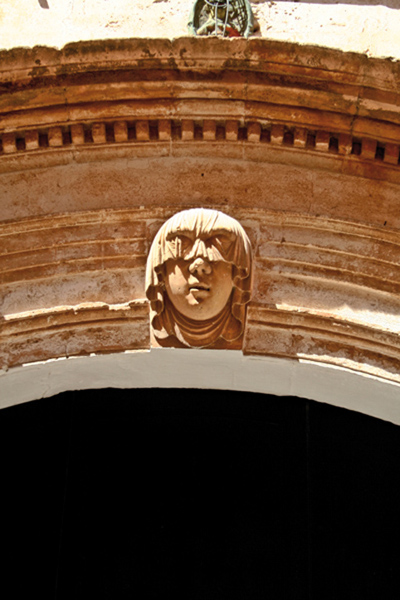

СЬЮТАДЕЛА. Один из нас
 Я вновь теряюсь на старых, заполненных светом улочках Сьютаделы, под этим пронзительно-голубым небом, рядом с морем, заполняющим собой все вокруг. Морем, которое во время трамонтаны солью окрашивает деревья в белый цвет и оживляет в моей памяти призраки давних воспоминаний. Теряться в этих местах я начал много лет назад, когда тихими летними ночами глухим эхом отдавались шаги в переулках, и едва слышно доносилось мяуканье кошки или лай беспризорного пса. Я вновь дотрагиваюсь до этих стен, распухших от слоев извести, до оголенного камня особняков, до потрескавшейся краски на окнах, и вновь возвращаюсь к мысли о том, что этот маленький мир, вмещающий все, так беспомощен, склонен к фантазии, одиночеству и, возможно, любви. Я некогда думал, что время замирало в этом зачарованном городе, где я родился, где, пересекая улицы, словно переходишь невидимую грань, ведущую в вечность, – этот бесконечный лабиринт милых сердцу улочек, навязчивый звон колоколов, черные рясы священников, платки одетых в траур женщин, состарившихся в самом расцвете сил, где слышна была звонкая поступь лошадиных копыт, вереница соседей, провожающих мертвых… Сейчас я так не думаю. Я видел, как исчезали многие лица, знакомые мне и абсолютно чужие, близкие и дальние родственники, личности знаменитые и харизматичные – черты ныне редкие для этих краев, лица, которые, обернулись тенью и возможно, улыбаются нам в этих грубых камнях, а может, в отблесках света Сьютаделы – города света и тени, мистификаций, перемен, традиций и неизменных истин, которые уже и не существуют. Я открываю глаза, поднимаю голову и вижу: время течет непрерывно, никогда не останавливаясь, и остановилось оно лишь в моем воображении.
Я вновь теряюсь на старых, заполненных светом улочках Сьютаделы, под этим пронзительно-голубым небом, рядом с морем, заполняющим собой все вокруг. Морем, которое во время трамонтаны солью окрашивает деревья в белый цвет и оживляет в моей памяти призраки давних воспоминаний. Теряться в этих местах я начал много лет назад, когда тихими летними ночами глухим эхом отдавались шаги в переулках, и едва слышно доносилось мяуканье кошки или лай беспризорного пса. Я вновь дотрагиваюсь до этих стен, распухших от слоев извести, до оголенного камня особняков, до потрескавшейся краски на окнах, и вновь возвращаюсь к мысли о том, что этот маленький мир, вмещающий все, так беспомощен, склонен к фантазии, одиночеству и, возможно, любви. Я некогда думал, что время замирало в этом зачарованном городе, где я родился, где, пересекая улицы, словно переходишь невидимую грань, ведущую в вечность, – этот бесконечный лабиринт милых сердцу улочек, навязчивый звон колоколов, черные рясы священников, платки одетых в траур женщин, состарившихся в самом расцвете сил, где слышна была звонкая поступь лошадиных копыт, вереница соседей, провожающих мертвых… Сейчас я так не думаю. Я видел, как исчезали многие лица, знакомые мне и абсолютно чужие, близкие и дальние родственники, личности знаменитые и харизматичные – черты ныне редкие для этих краев, лица, которые, обернулись тенью и возможно, улыбаются нам в этих грубых камнях, а может, в отблесках света Сьютаделы – города света и тени, мистификаций, перемен, традиций и неизменных истин, которые уже и не существуют. Я открываю глаза, поднимаю голову и вижу: время течет непрерывно, никогда не останавливаясь, и остановилось оно лишь в моем воображении.
 В прошлом тихие, пустынные улицы видели, как город почивал на лаврах аристократии, пришедшей вместе с каталанскими завоевателями, и буквально вырвавшей себе дома и особняки из рук арабских поселенцев. Улицы, по которым с утра до вечера разлетались звуки ударов молотка, – это были работницы фамильных фабрик, монотонно стучавшие по мрамору. Слышались окрики матерей, звавших домой детей, увлеченных играми на этих улочках, где никогда не проезжала ни одна машина. Возможно, слышался стук работающей швейной машинки – это швея подгоняла кусочки кожи для будущей обуви. Бывало, удары мяча о стену нарушали спокойствие проходящих мимо стариков, сгорбленных, в своих бессменных беретах, опиравшихся на трости и с окурком сигары в зубах. Мальчишки играли в футбол посреди улицы, а девочка, размахивая руками во все стороны, уверяла, что плывет куда-то по воображаемому морю; другая детвора забавлялась игрой в стеклянные шарики, объясняя каждый ход некими английскими словечками, которые остались здесь еще со времен английского господства XVIII века. Кто-то из них в компании девочек прыгал в классики или в скакалку, или играл в прятки, прогоняя ребят из других компаний обидными словами: «Уходи, ты не из наших».
В прошлом тихие, пустынные улицы видели, как город почивал на лаврах аристократии, пришедшей вместе с каталанскими завоевателями, и буквально вырвавшей себе дома и особняки из рук арабских поселенцев. Улицы, по которым с утра до вечера разлетались звуки ударов молотка, – это были работницы фамильных фабрик, монотонно стучавшие по мрамору. Слышались окрики матерей, звавших домой детей, увлеченных играми на этих улочках, где никогда не проезжала ни одна машина. Возможно, слышался стук работающей швейной машинки – это швея подгоняла кусочки кожи для будущей обуви. Бывало, удары мяча о стену нарушали спокойствие проходящих мимо стариков, сгорбленных, в своих бессменных беретах, опиравшихся на трости и с окурком сигары в зубах. Мальчишки играли в футбол посреди улицы, а девочка, размахивая руками во все стороны, уверяла, что плывет куда-то по воображаемому морю; другая детвора забавлялась игрой в стеклянные шарики, объясняя каждый ход некими английскими словечками, которые остались здесь еще со времен английского господства XVIII века. Кто-то из них в компании девочек прыгал в классики или в скакалку, или играл в прятки, прогоняя ребят из других компаний обидными словами: «Уходи, ты не из наших».
Каждое утро, после утренних занятий в школе и тоскливой обедни, матери готовили своим детям бутерброды с тертыми помидорами или оливковым маслом, посыпая их солью или сахаром, которые те съедали на ходу, вызывая зависть у голодных собак. Некоторым счастливчикам доводилось наблюдать, как их родительницы обжаривали на открытом огне угольной плитки кусочек собрасады (свиной колбасы), нанизанной на старую вилку, и жир, сочащийся из опаленной на огне колбасы, окрашивал белый хлеб красным цветом. Возможно, то были дети какого-нибудь опытного бижутера, который изготавливал ожерелья и серьги из стеклянных бусинок, как те, которыми морочили голову американским индейцам или неграм из Африки. Эти ожерелья, аксессуары, а также обувь и были той индустрией, что позволила на много лет отсрочить появление туризма на Менорке. Не обошлось и без помощи фермеров, разводивших скот и изготавливавших сыр, который после выдержки приобретал столь насыщенный контрастными оттенками вкус и становился под стать многоликим пейзажам острова, его ветреному климату и разным цивилизациям, побывавшим здесь.
Каждое воскресенье крестьяне надевали свои лучшие костюмы на обгоревшие на солнце тела. У них были подозрительно светлые волосы, необычные для здешних мест голубые глаза, высокий рост и худощавое телосложение. Говорили они с многозначительными паузами и будто внутрь себя, напоминая актера, прогоняющий дома свою роль. Изможденные, что придавало их облику налет романтичности, полные веры в свое дело и глубокого уважения к хозяевам земель, с взглядом, обращенным на одну единственную женщину, которая будет рядом, пока смерть не разлучит их. Хозяева поместий, получившие их после раздела земель королем Альфонсо III, могли иметь в собственности черный автомобиль, который, правда, очень медленно двигался, словно подражая крестьянской технике, с овальным окошком сзади и капотом, вздутым как цирковой шатер. Своих крестьян они принимали по-отечески, благословляли их браки, вместе с ними праздновали, танцевали, слушали гитару и пели – «если с неба упадет луна, ты словно одна из ее частей», – присутствовали на обрядах крещения детей, ели печенье с начинкой из джема и пили сладкое вино, отрицая прогресс, слухи о котором приносили с Майорки первые предприниматели в сфере туризма.
 Помню, как в первый раз услышал немецкий язык на пляже Сантандрии. Казалось, его придумывали у меня на глазах, настолько странно было это слышать. Первые туристы носили цветастые рубашки и короткие шорты такие широкие, что, как говаривал мой отец, в них влезло бы четверо и они бы умерли от стыда, если бы пришлось их надеть. Когда полицейский по фамилии Барсело сделал на пляже замечание одной иностранке, загоравшей в бикини, сказав, что необходимо носить закрытые купальники, состоящие из одного предмета, та с радостью спросила, какую именно часть из бикини он прикажет ей снять. Один мой друг рассказывал, как на пляже Кала Морей две шведки вязали, обнажив при этом грудь, и, окруженные облаком любопытных, говорили что-то в духе: «У нас это нормально». И вдруг все стало казаться нормальным, даже эти слова президента Адольфо Суареса (Adolfo Suárez): «Нужно перенести в категорию нормальности все, что считается нормальным на улице». Мы опаздывали на полвека, но, надев бикини, наверстали за два года. Внезапно эти самые улицы и портовые террасы заполнились разноцветными одеждами, витринами, полными сувениров, и этими ловкачами, которые говорят по-итальянски с итальянками, умудряются учить английскому британцев и работают «латинскими любовниками». Не знаю, сможем ли мы когда-нибудь это переварить, но туризм уже здесь, каждый сезон, превратившийся в единственную индустрию, которая у нас осталась, или почти единственную.
Помню, как в первый раз услышал немецкий язык на пляже Сантандрии. Казалось, его придумывали у меня на глазах, настолько странно было это слышать. Первые туристы носили цветастые рубашки и короткие шорты такие широкие, что, как говаривал мой отец, в них влезло бы четверо и они бы умерли от стыда, если бы пришлось их надеть. Когда полицейский по фамилии Барсело сделал на пляже замечание одной иностранке, загоравшей в бикини, сказав, что необходимо носить закрытые купальники, состоящие из одного предмета, та с радостью спросила, какую именно часть из бикини он прикажет ей снять. Один мой друг рассказывал, как на пляже Кала Морей две шведки вязали, обнажив при этом грудь, и, окруженные облаком любопытных, говорили что-то в духе: «У нас это нормально». И вдруг все стало казаться нормальным, даже эти слова президента Адольфо Суареса (Adolfo Suárez): «Нужно перенести в категорию нормальности все, что считается нормальным на улице». Мы опаздывали на полвека, но, надев бикини, наверстали за два года. Внезапно эти самые улицы и портовые террасы заполнились разноцветными одеждами, витринами, полными сувениров, и этими ловкачами, которые говорят по-итальянски с итальянками, умудряются учить английскому британцев и работают «латинскими любовниками». Не знаю, сможем ли мы когда-нибудь это переварить, но туризм уже здесь, каждый сезон, превратившийся в единственную индустрию, которая у нас осталась, или почти единственную.
Давайте присядем в порту Сьютаделы августовской ночью. Прислушаемся к разговорам на смеси языков, которыми плохо владеют даже их носители, послушаем разную музыку, стремящуюся занять свой кусочек пространства в каждом баре и каждом ресторане, а паузы заполнит бряцанье яхтенных мачт, покачивающихся на воде. Когда от влажной прохлады ночи онемеют мышцы, а алкоголь затуманит голову, мы снова сможем побродить по этим темным улочкам, забытым Богом, как во времена пирата Барбароха, а в наши дни превратившиеся в базары безделушек. Забудем о прошлом и направимся в призрачное будущее с каждым новым рассветом – будущее с мимолетными романами, танцем фанданго, выученным в академии, звуками четырехструнной гитары и кастаньет, продуктами ремесел и супермаркетов. Перенесемся благодаря книгам, таким как эта, для туристов, наверняка, не слышавших никогда языка, на котором говорят в тех старых четырех стенах, где все еще возвышается Сьютадела.